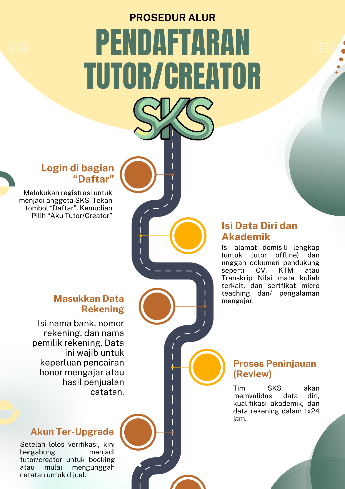
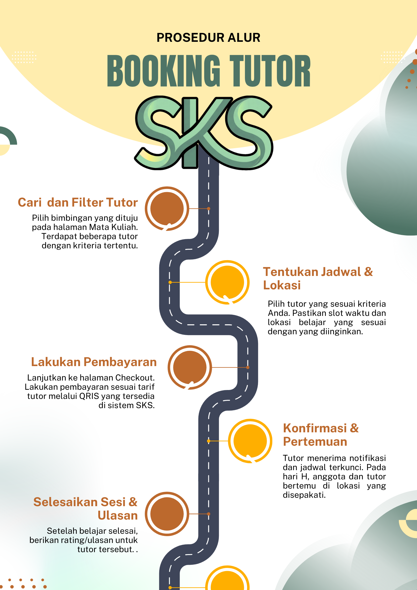
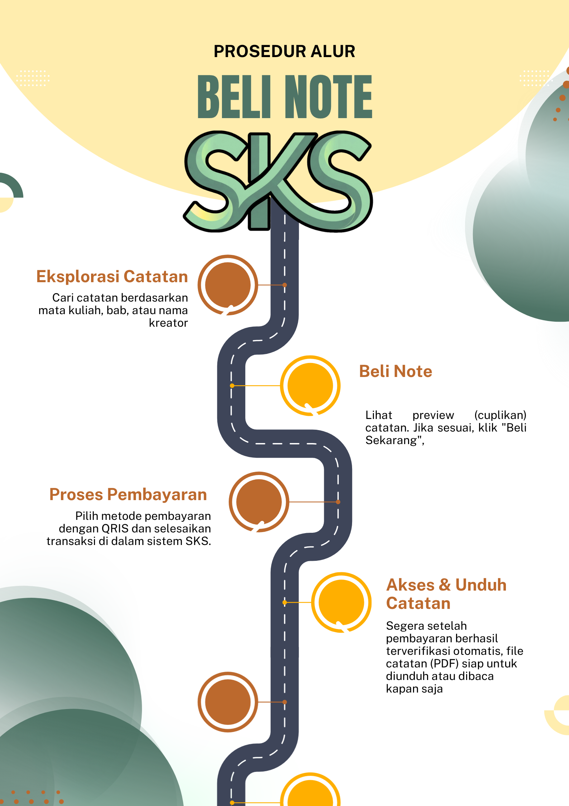

Bebas Pilih Tempat
Belajar di Surabaya.
Sesuai Vibes Nugasmuu
Dari ruang diskusi di perpustakaan kampus, coworking space sekitar area Mulyorejo dan Gubeng, hingga sesi online dari kamar kos, serta tarif yang transparan.
Area KampusKafe & CoworkingSesi Online
Jarak Tempuh Lebih Menentukan daripada Estetika Tempat
Mahasiswa punya jadwal kuliah yang padat. Sesi tutor dua jam yang didahului perjalanan macet empat puluh menit hanya akan terasa berat dan membuatmu datang dalam keadaan sudah lelah. Pilih lokasi yang searah dengan rutinitas harianmu.
Jika kamu sering beraktivitas di sisi timur, titik kumpul di sekitar Gubeng atau Mulyorejo bisa jadi pilihan. Kalau hari itu sedang full kelas dan terlalu lelah keluar, tutor SKS tetap bisa mendampingimu secara online tanpa biaya tambahan.
Kurasi Tempat Nugas Favorit SKS
| Coworking Space Area Timur | Kapasitas 20 orang, WiFi, ruang ber-AC, area parkir luas. |
| Kafe 24 Jam Area Selatan | Cocok untuk bedah materi malam hari. Syarat: cukup beli minum masing-masing. |
| Jam Layanan Tutor SKS | Senin-Minggu, 08.00-21.00 WIB. Slot jadwal dikunci lewat WhatsApp sebelum sesi pertama. |
Langkah Mudah Daftar dan Booking


